現世の陰陽五行説 vs 四魔貴族の四大精霊
現世とアビスの魔法体系
2021年2月25日のロマサガRSの生放送中、河津さんがロマサガ3の四魔貴族について話されていました。この話が興味深く、ロマサガ3の世界で起きている力の対立構造が見えてきます。
※28:21頃～30:25頃まで
ここから先では陰陽五行説と四大精霊について見ていきます。
ロマサガ3の陰陽五行説
サガシリーズは五行説の概念が頻繁に登場します。以前、サガシリーズと陰陽五行説という記事にまとめているので詳細はこちらを見ていただきたいですが、
ロマサガ3の世界は五行説に則った物がシリーズ中でも特に多く存在しています。
主人公選択時に選ぶ、歳星（さいせい）・螢惑（けいこく）・鎮星（ちんせい）・太白（たいはく）・辰星（しんせい）は五行に則ったものです。
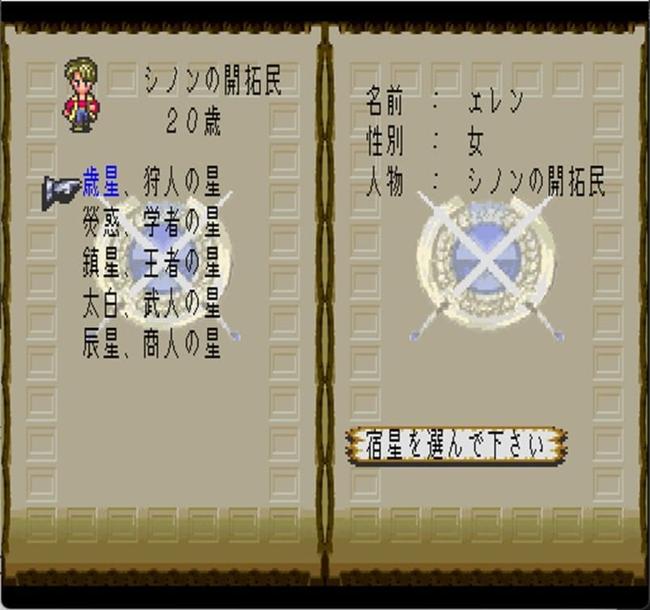
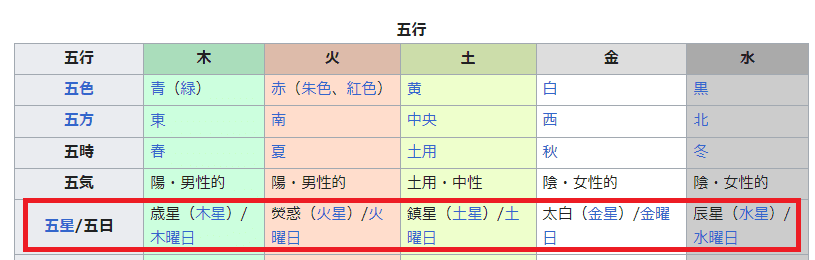
※画像はこちらから抜粋
術の体系は蒼龍、朱鳥、白虎、玄武で、剣技の黄龍剣も合わせれば五行になります。
術体系
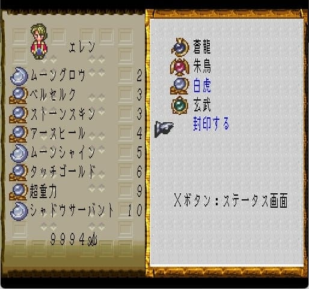
黄龍剣
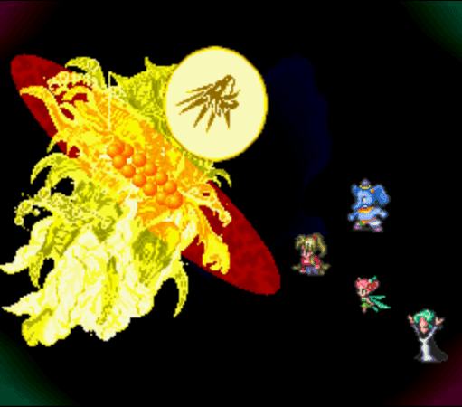
さらに玄武の鎧、白虎の鎧、朱鳥の鎧、蒼龍の鎧、黄龍の鎧があり、これも五行に則ったものになっています。
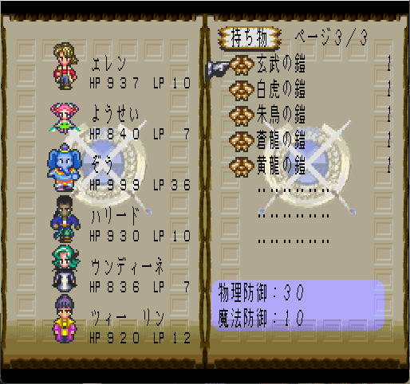
これに加え、ロマサガ3には天術（月術と太陽術）というものがあり、陰陽術とも呼ばれます。東方の人間が魔王に対抗するために使用していた術で、西方にはいくつかのみ伝わっているとされています（練磨の書 P182）。
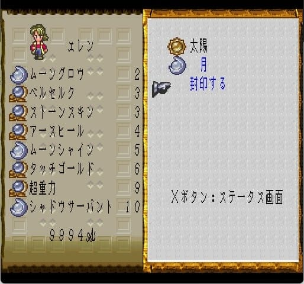
このようにロマサガ3の世界は五行に則ったものが多く存在しており、世界のベースは陰陽五行説で成り立っていると考えることができます。
四大精霊（四魔貴族側）
一方、先の動画の中で河津さんは、「アビス」にいる複数体の悪魔の中から、火、土、水、風の4属性を持つ4体の悪魔がロマサガ3の世界に現れ、それが四魔貴族だと言っています。
「アビス側は火、土、水、風という、4つの精霊に基づいた魔法体系を持っています」と言っていますが、これは四大精霊と呼ばれるものです。この属性は様々なゲームでよく出てくるのでなじみ深いでしょう。ロマサガ2の術体系もこれ（＋天と冥）ですね。
各四魔貴族が護っているアビスゲートにもちゃんと属性があるようで、閉じる際に各属性に応じた色で発光しています（画像参照）。
アウナス（赤＝火）
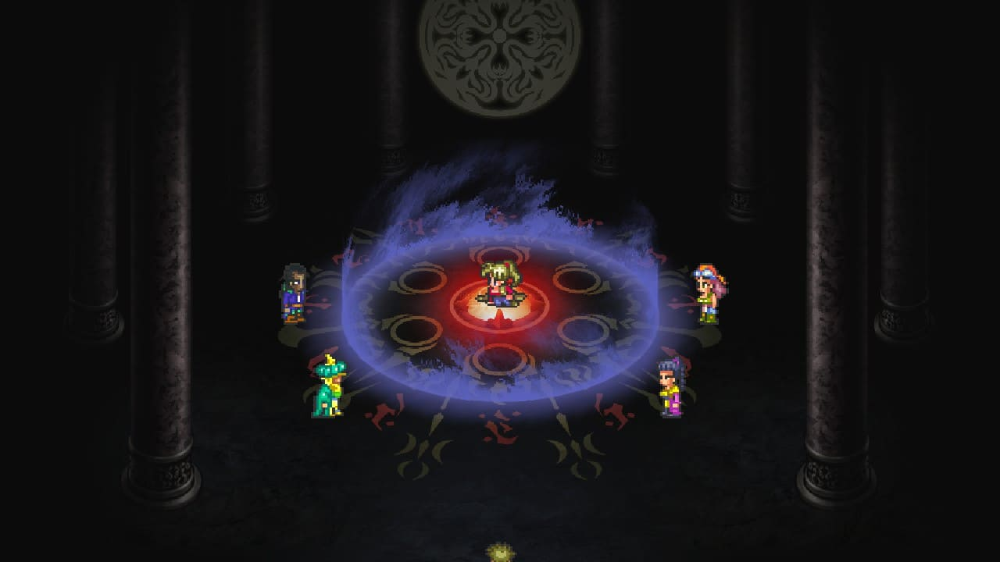
アラケス（白＝土）
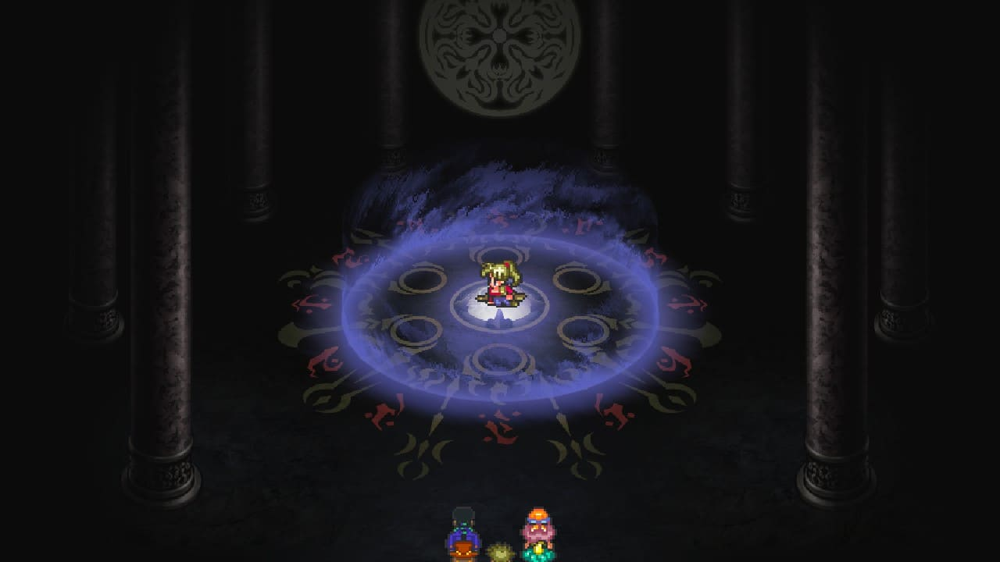
フォルネウス（青＝水）
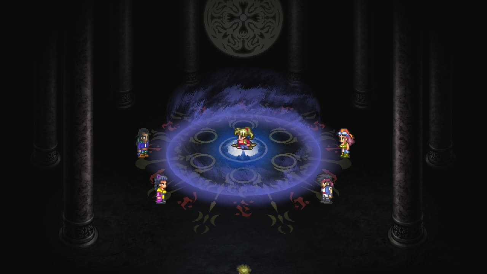
ビューネイ（緑＝風）
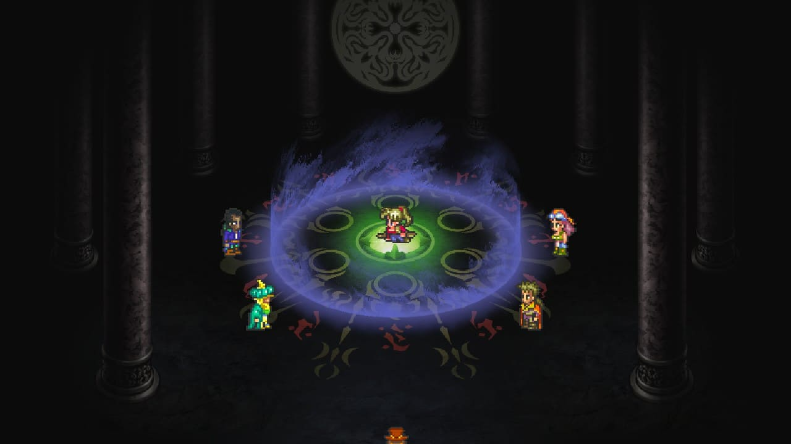
対立によって起きていること
ロマサガ3の世界は陰陽五行説（主人公側）と四大精霊（四魔貴族側）の対立構造になっていることがわかります。
聖王が残した最強術が四魔貴族を倒さないと使えないのは、五行説の世界に四大精霊という違う概念が持ち込まれ、その力のせめぎ合いによって本来の五行の力が発揮でないような状態になっていると解釈しています。
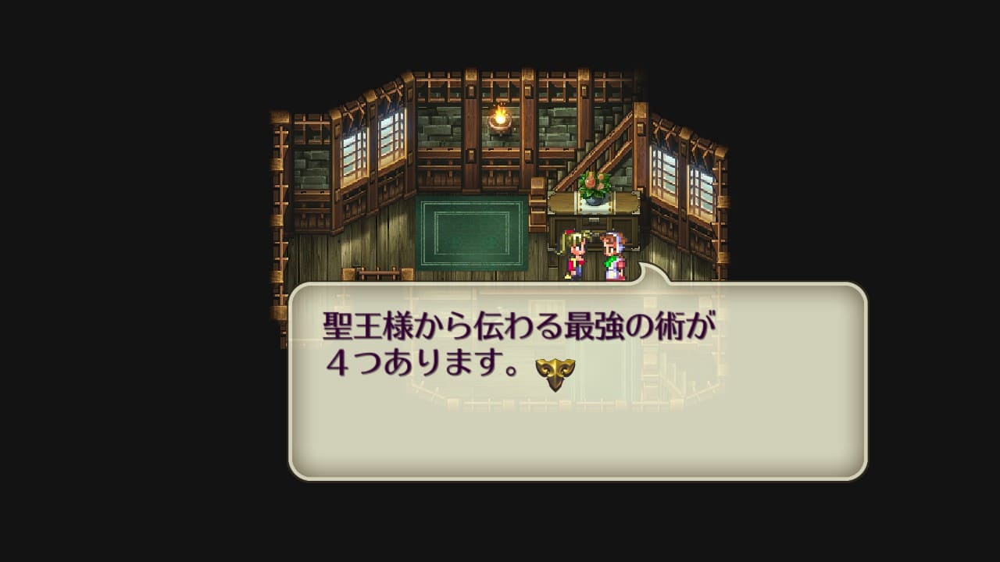
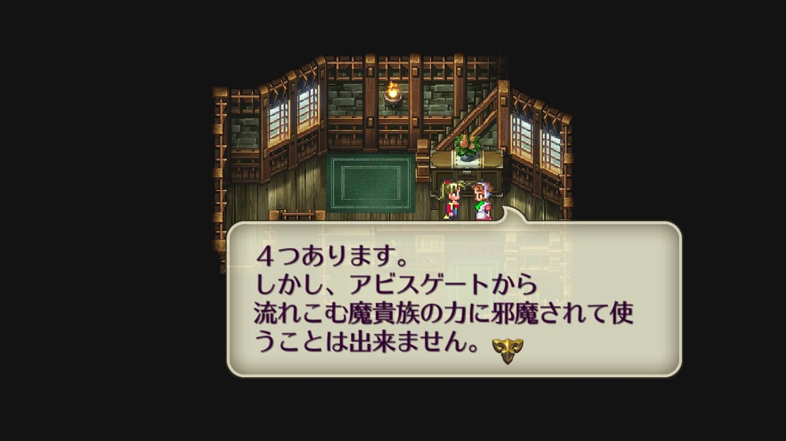
一方、陰陽にあたる月と太陽の最強術は東方に行きさえすればいつでも買うことができ、四魔貴族の影響を受けていません。影響を受けているのは五行の部分であって陰陽にあたる部分は影響を受けていないというように私は捉えています。
陰陽術は元々東方の人間が魔王に対抗するために使用していた術なので抗うことができるのでしょう。
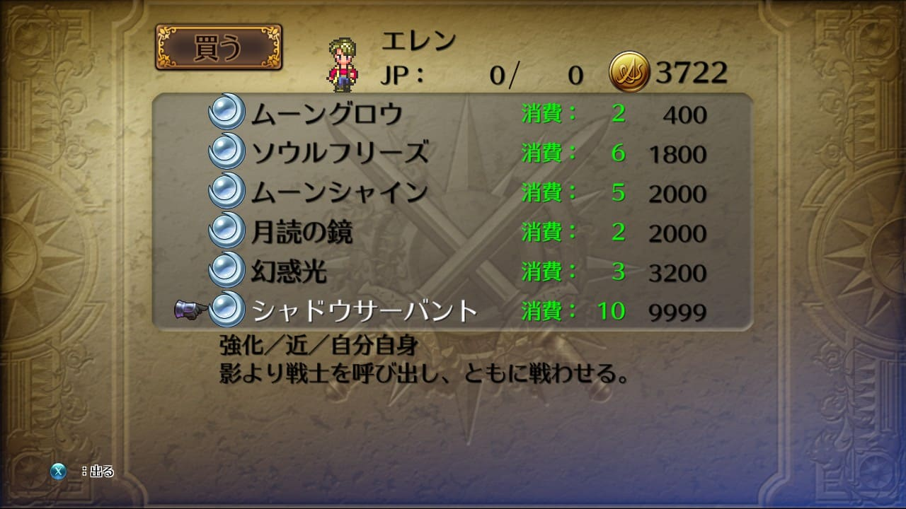
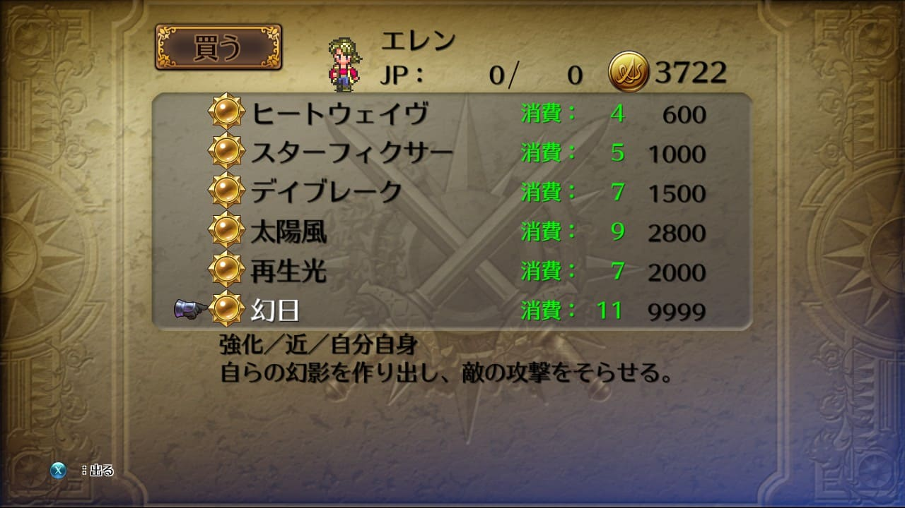
凄くどうでもいい話ですが、太陽術の最強術である幻日（げんじつ）は、実際に存在する事象です（参考）。太陽術の幻日はまさにこの事象を参考に考えられた術なんですね。
まあそんなことは閑話休題として本題に戻ります。
四魔貴族（影）を倒すと、以下の最強術が解放されます。なぜかランスのアンナが教えてくれます。
- アラケス（土）を倒すと白虎術の超重力
- アウナス（火）を倒すと朱鳥術のリヴァイヴァ
- ビューネイ（風）を倒すと蒼龍術の竜神降臨
- フォルネウス（水）を倒すと玄武術のクイックタイム
このように、ロマサガ3の世界は五行と四大精霊の対立構造になっており、各属性を司る四魔貴族（影）を倒すことで五行が本来の力を取り戻したという形になっていることがわかります。
こういう思想が術の体系に現れているというのもなんだか面白いですよね。
余談：アビスと魔貴族
これは余談ですが、四魔貴族はソロモン72柱という悪魔が元ネタとなっています（以下表参照）。
| 四魔貴族 | ソロモン72柱（元ネタ） | 元ネタの悪魔の詳細 |
|---|---|---|
| アラケス | アロセス | 獅子の獣人。博識な知識を与える。 別名で「アロケス」や「アロカス」という名もある。 アロケルは立派な馬にまたがった、燃えるような眼を持つ真っ赤なライオンの頭を持った兵士の姿で現れる。 |
| アウナス | アミー | 燃えるような炎の姿をした悪魔。使い魔を与える。 別名で「アウナス」や「ハンニ」という名もある。 |
| ビューネイ | ブネ | 竜の悪魔。悪霊を操る能力をもつ。 ３つの頭をもつ龍の姿で現れます。 犬、グリフォン、人間の3つの首を持つ竜の姿で現れ、高音の心地よい声で話します。 |
| フォルネウス | フォルネウス | 大海の怪物（巨大なサメ）の姿をした悪魔。 人間にカリスマ性を与える。 |
ロマサガRSのビューネイが「我が本質は龍なのだ」と言っているのは、元ネタのブネが竜の悪魔だからなんですね。
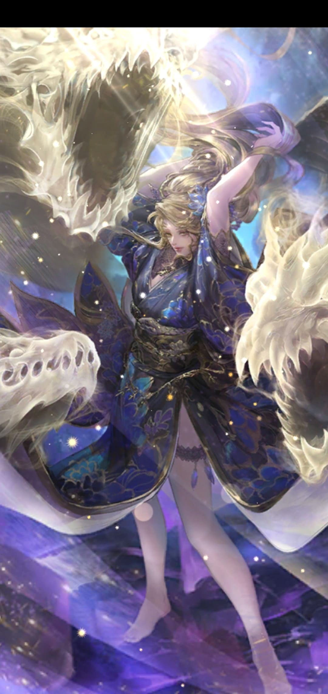
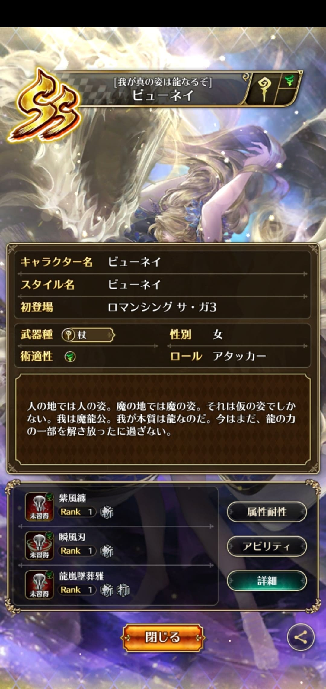
さらに余談ですが、ロマサガRSのポルカ編で出てきたイゴマールの本当の名前はオリアクスで、ソロモン72柱にもオリアクスという悪魔がいます。この悪魔は「星の動きを読むための知識を教える。」とされており、ロマサガRSの星読みの力はここからきていることがわかります。
恐らく河津さんの言う「魔貴族」は「ソロモン72柱」でその中の4体が「四魔貴族」ということなんでしょうね。
参考